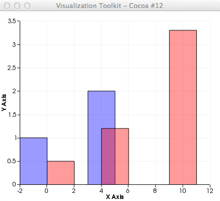

from vtk import *
chart = vtkChartXY()
view = vtkContextView()
view.GetRenderer().SetBackground(1.0, 1.0, 1.0)
view.GetScene().AddItem(chart)
table1 = vtkTable()
x1 = vtkFloatArray()
x1.SetName("h1x")
table1.AddColumn(x1)
y1 = vtkFloatArray()
y1.SetName("h1y")
table1.AddColumn(y1)
table1.SetNumberOfRows(2)
table1.SetValue(0, 0, 0) # row,col, val (put x-values into col 0; y-values into col 1)
table1.SetValue(1, 0, 5)
table1.SetValue(0, 1, 1)
table1.SetValue(1, 1, 2)
bar = chart.AddPlot(vtkChart.BAR)
bar.SetInput(table1, 0, 1)
bar.SetColor(0, 0, 255, 100) # make semi-transparent
#-------------------
table2 = vtkTable()
x2 = vtkFloatArray()
x2.SetName("h2x")
table2.AddColumn(x2)
y2 = vtkFloatArray()
y2.SetName("h2y")
table2.AddColumn(y2)
table2.SetNumberOfRows(3)
table2.SetValue(0, 0, 0)
table2.SetValue(1, 0, 4)
table2.SetValue(2, 0, 9)
table2.SetValue(0, 1, 0.5)
table2.SetValue(1, 1, 1.2)
table2.SetValue(2, 1, 3.3)
bar = chart.AddPlot(vtkChart.BAR)
bar.SetInput(table2, 0, 1)
bar.SetColor(255, 0, 0, 100) # make semi-transparent
view.GetInteractor().Initialize()
view.GetInteractor().Start()
